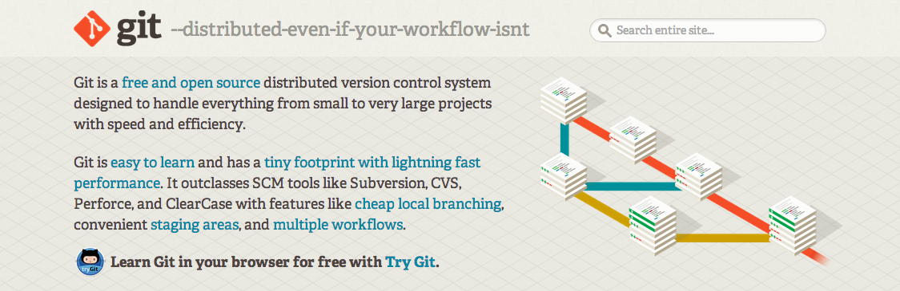
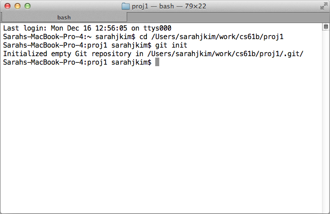
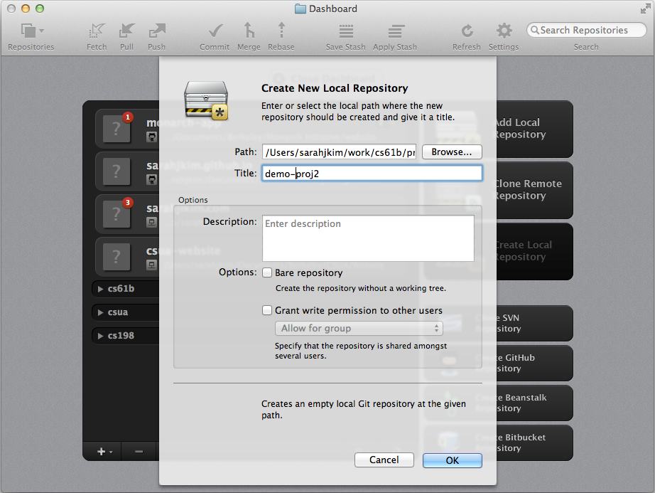
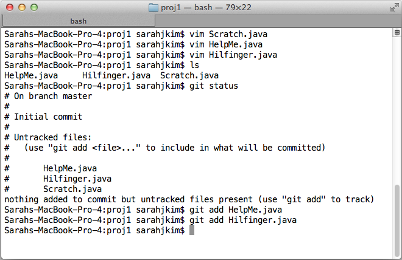
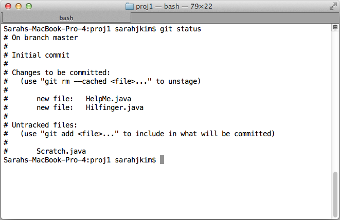
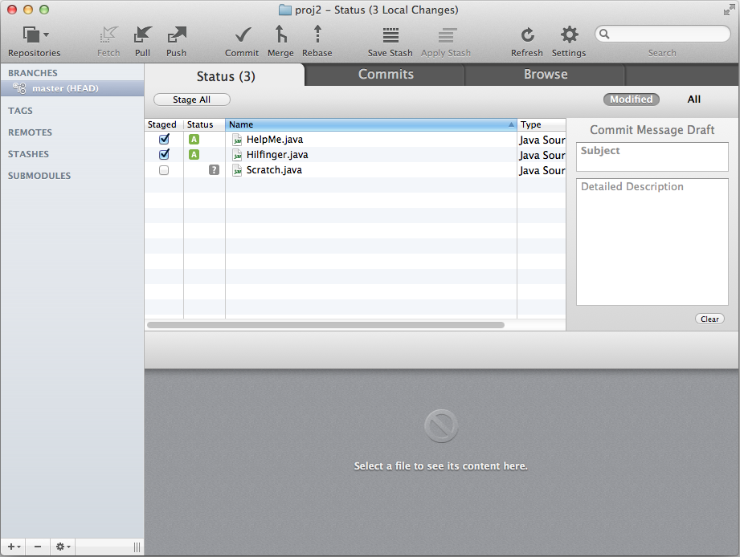
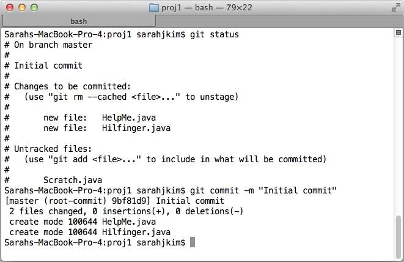
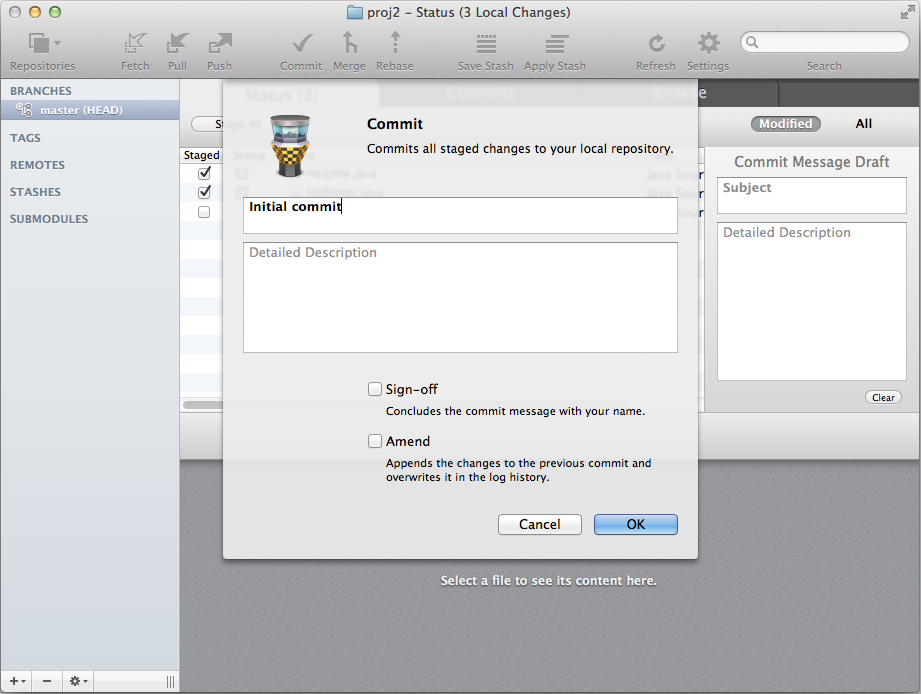
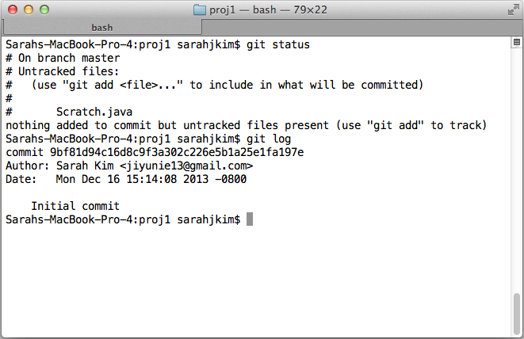

What I Now Know About Version Control (Part 1)
Monday, December 16, 2013
Let me start off this post with a disclaimer. I am not a version control guru.
I have not mastered GitHub. I do not have 54 day commit streak like
Mark Miyashita.
In other words, this is a post by a beginner for beginners. It is as much about my
initial failures as it is about what I do know now. So if you could teach a
workshop on version control, you can view this post as a source of amusement.
1. When I First Heard of "Version Control"
I first heard the words "version control" from my friend
Soumya Basu
a little less than a year ago. He had taken one look at my previous way of saving
versions of my CS project and had just started laughing. I was a bit taken aback
at first, then incredulous when he said there already existed systems to do what
I had been doing. Now looking back, I am so thankful that he told me about version
control when he did.

My previous way of saving versions of CS projects
2. What Is Version Control?
Version control systems are ways to keep track of changes to documents, computer
programs, and projects. Version control allows you to revert changes and go back
to previous iterations of your files. Some aspects of version control are actually built into
very commonly used applications. Think of how Microsoft Word has the "Undo" command
and how you can see who has changed what in Google Docs.
There are also version control systems for personal files. The most commonly used is Git, and this is what I will be using for the rest of this post. Git has very good documentation, so I highly encourage people to read about what I'll be summarizing in these next few lines.

There are also version control systems for personal files. The most commonly used is Git, and this is what I will be using for the rest of this post. Git has very good documentation, so I highly encourage people to read about what I'll be summarizing in these next few lines.
My preferred version control system
3. How Does Git Work?
Let's say you want to keep track of some project files. In order to do this,
you need to "initialize" a Git repository. A repository is basically a grouping
of files that you want to track changes of.
When you "initialize" a Git repository, Git actually creates a .git subdirectory that can't be seen because it is invisible as a default for most operating systems. But it's there! If you want to see it, try searching for "view invisible files." I actually did when I first started using Git to prove to myself that things were indeed happening.
So when you save "snapshots" of your files by "staging" and "committing" your changes, Git actually saves the current version of your files in this .git subdirectory. So in a sense, it is actually doing the same thing that I was doing when Soumya first laughed at me.
When you "initialize" a Git repository, Git actually creates a .git subdirectory that can't be seen because it is invisible as a default for most operating systems. But it's there! If you want to see it, try searching for "view invisible files." I actually did when I first started using Git to prove to myself that things were indeed happening.
So when you save "snapshots" of your files by "staging" and "committing" your changes, Git actually saves the current version of your files in this .git subdirectory. So in a sense, it is actually doing the same thing that I was doing when Soumya first laughed at me.
4. Initializing A Git Repo
You can
initialize a Git repository (shortened to "repo") by typing "git init"
in command line while in the directory that you wish to create your repo in.
Let's say that the project I want to keep track of is located in ~/work/cs61b/proj1. In the image below, I first "cd" to the proper directory then "git init." Note that if you use the "ls" command, the .git subdirectory will not show up. But you can "cd .git" to prove that it does exist.
You can also use a GUI (Graphical User Interface) if you don't want to use command line. I personally love to use Tower, which is a Git client for Mac. You can see a side-by-side of command line and GUI usage below. My command line will work on proj1 while the GUI will work on proj2.
Let's say that the project I want to keep track of is located in ~/work/cs61b/proj1. In the image below, I first "cd" to the proper directory then "git init." Note that if you use the "ls" command, the .git subdirectory will not show up. But you can "cd .git" to prove that it does exist.
You can also use a GUI (Graphical User Interface) if you don't want to use command line. I personally love to use Tower, which is a Git client for Mac. You can see a side-by-side of command line and GUI usage below. My command line will work on proj1 while the GUI will work on proj2.


Initialized a Git repository
5. Tracked vs. Untracked Files
So now that you've initialized your Git repo, how does it keep track of changes?
Note that after initializing your repo, it is empty. No files are being tracked.
So you need to track your files in order for Git to save versions of these files.
The Git documentation actually had an excellent section on
recording changes.
One of the figures in that section is right here:

Figure from excellent Git documentation
Let me explain what this figure is saying. Files fall into two main categories:
tracked and untracked. Untracked files are those that have never been added to
the Git repo or those that have been removed from the Git repo. Tracked files
encompass the three right sections of the figure above.
Let me give an example. Let's say that my proj1 directory contains three files: Scratch.java, HelpMe.java, and Hilfinger.java. After initializing my Git repo, none of these files are being tracked. Now, I start tracking Hilfinger.java and HelpMe.java. When I save a version of my directory in a process called a "commit," I would have versions of Hilfinger.java and HelpMe.java in my Git repo. Scratch.java, however, is not being tracked/saved by the Git repo, so if I change it, I cannot easily recover how the file was before I changed it.
Let me give an example. Let's say that my proj1 directory contains three files: Scratch.java, HelpMe.java, and Hilfinger.java. After initializing my Git repo, none of these files are being tracked. Now, I start tracking Hilfinger.java and HelpMe.java. When I save a version of my directory in a process called a "commit," I would have versions of Hilfinger.java and HelpMe.java in my Git repo. Scratch.java, however, is not being tracked/saved by the Git repo, so if I change it, I cannot easily recover how the file was before I changed it.


Tracked & untracked files
In command line, "git status" tells you what files are being tracked, and you can
"git add [file]" in order to track it (and stage it). The Tower GUI also starts off with all files
untracked. Just as in command line, staging a file makes it a tracked file.
6. Staging & Committing Tracked Files
Tracked files can be either unmodified, modified, and/or staged.
An unmodified file is one that has had no new changes since the last version of the files
was added to the Git repo. A modified file is one that is different from when
Git last took a "snapshot" of the directory. Finally, a staged file is one that
a user has designated as part of a future commit. In other words, you stage a file
to let Git know that you would like to include it in your next commit. In fact,
staging a file makes it a tracked file.


Staged files
Using "git status" in command line shows you that the previous "git add [file]"
commands staged HelpMe.java and Hilfinger.java. I have also clicked the checkbox
in the Tower GUI to stage the same two files. The "A" in a green box shows that
I am adding the two files as they were previously untracked.
I have been using the word "commit" without fully explaining it, so here is what this means. Just like I used to keep track of versions of my files, Git does the same. It saves "snapshots" of your working directory, and these snapshots contain user-specified files as they were at the time Git saved a "snapshot" of the work. These files are designated by the user through the staging process.
I have been using the word "commit" without fully explaining it, so here is what this means. Just like I used to keep track of versions of my files, Git does the same. It saves "snapshots" of your working directory, and these snapshots contain user-specified files as they were at the time Git saved a "snapshot" of the work. These files are designated by the user through the staging process.


First commit
In command line, "git commit -m [message]" commits the staged files. The Tower GUI
is super simple with a checkmark commit button at the top. You can type "git log"
to see your previous commits in command line, or click on the "Commits" tab in the
Tower GUI for the same thing.


Checking previous commits
The Git reference also has lots of information about
different options you can use to filter your log when
viewing commit history.
It might also be worth checking out "gitk," which is a GUI prompted by the command line
(though I much prefer the pretty Tower GUI).
7. Undoing Things
So what happens if you make a mistake? What if you want to change your last commit
without making a new commit to override it? (Use "git commit --amend".)
What if you want to unstage a file? (Use "git reset HEAD [file]".)
All these questions and more can be answered by reading the Git documentation
on undoing things.
I should note here that you should commit often. Anything that has been committed can be recovered. This is the beautiful thing about Git. Now, you can change your code with the assurance that you can always revert or review your changes if something breaks.
I should note here that you should commit often. Anything that has been committed can be recovered. This is the beautiful thing about Git. Now, you can change your code with the assurance that you can always revert or review your changes if something breaks.
Anyways, thanks for reading! Part 2 of this "What I Now Know About Version Control" series
will hopefully cover remotes, branching, forking, cloning, merging, fetching, and more.
So be on the lookout for that! Feel free to comment below with questions (which I
shall do my best to answer) or corrections to the material above.